# loading tidyverse/ tidymodels packages
library(tidyverse) #core tidyverse
# visualization
library(viridis) #color scheme that is colorblind friendly
library(ggthemes) # themes for ggplot
library(gt) # to make nice tables
library(cowplot) # to make multi-panel figures
library(corrplot) # nice correlation plot
library(randomcoloR)
#Geospatial Data
library(tidygeocoder) #converts city/state to lat/long
library(sf) # for handling geo data
library(mapview) # quick interactive mapping
library(leaflet) # more mappingCredit Card Fraud: A Tidymodels Tutorial
R
R-code
mapping
tidymodels
machine learning
classifiers
An Imbalanced Class Problem
The Problem
I’ve used the credit card fraud dataset from Datacamp for a variety of projects, most notabily the tidymodels and imbalance class tutorials. I’ve used it when I was learning Tableau and also Python. One advantage of working with the same dataset is that it becomes easier to catch errors in your analysis, or even in the dataset itself.
This dataset is synthetic (and the code to generate the data is freely available online). Synthetic data is common in data analysis/ data science learning communities. It is valuable to have a dataset that is complete (enough) to practice a particular technique or method without getting bogged down in various problems that might arise from real world data. And I should specify by “completeness” I don’t mean that the dataset lacks missing data, I mean the dataset contains sufficient features to solve the problem at hand. In the real world, deciding on needed features/variables and figuring out how to acquire them is often the first step in a data science or data analysis problem.
Some types of datasets aren’t readily available except as synthetically generated data because they contain personal or propriatary data. Credit card fraud data is a prime example; transaction level data is not available to the general public. If real world data is available, it is, for example, as a PCA transformed dataset where the underlying variables are obscured.
Synthetic data can thus extremely useful, but there are a few pitfalls. First, you need to have some sort of assurance that the dataset accurately reflects the true data to an appropriate level. So you always need to be evalauting the results and asking if they make sense. But you can’t go too far down a rabbit hole and fact check every result. Some decision made in the code to generate the data may not be “correct” but it may still produce a dataset that is a valid test of methods for that class of problems. Other decisions might create a dataset so flawed that it isn’t useful. Telling the two cases apart can be difficult when you don’t have experience with real world data. Still, keeping these ideas when you work with the data is important. (Why?)
This dataset passed my “smell test” even though some of the analyses produced results that I thought were odd. The distribution of the hour of the transactions (see Fig. 8 and the discussion) seemed off. The geographic data didn’t raise any flags when I did my initial analysis in R, but it should have. When I started working with this data in Tableau, the various geographic data and transaction data was correlated in ways I couldn’t explain at all.
In this blog post, I’m going to discuss the geographic data and:
what I thought it was and what it actually is.
the right way to analyze this data given how it was generated
the right way to analyze geographic data that comes from the “real world”
the big mistakes I made in my initial analyses that lead me to overlook this problem and how I would prevent these errors in the future.
I think it is important to always engage with our projects critically and also to learn from our mistakes.
I will be citing the code that generates the data, so if you are planning to model this data either at datacamp or at Kaggle, you may want not read any more of this post. The one thing you need to know if you are working on Datacamp’s version of the dataset is that the data dictionary is wrong. The lat/long are the customer location, not the transaction location.
The Geographic Data and the Data Dictionary
The data dictionary, from datacamp, defines 3 sets of geographic variables. You can look at a sample notebook of mine with the dataset and the data dictionary.
Here is a copy of the geographic variables from the data dictionary.
| city | City of Credit Card Holder |
| state | State of Credit Card Holder |
| lat | Latitude Location of Purchase |
| long | Longitude Location of Purchase |
| merch_lat | Latitude Location of Merchant |
| merch_long | Longitude Location of Merchant |
The source of the data (prior to preparation by DataCamp) can be found here and does include a data dictionary. (and I’m an idiot)
As I mentioned in the introduction, while playing with the dataset in Tableau, I became very confused about what lat/long and merch_lat/merch_long actually represented. This Tableau figure doesn’t make much sense in light of the data dictionary. (INSERT EMBED)
Is lat/long the customer address?
I puzzled over this for a long time (I finalized my Tableau dashboards in July, but never did anything with them, because I was so confused by my results. I did check the Tableau results by manually pulling out some subsets of data in R, and what I was seeing in my pretty Tableau maps was correct.
While trying to write up some thoughts about Tableau (in November), I decided to delve back into this question. Looking at the kaggle notebook, it states that the lat/long are the customer address.
Loading Libraries
Loading the necessary libraries.
theme_set(theme_cowplot(12))Loading the data. This is a local copy that is part of the workspace download from Datacamp.
# Code Block 4: Reading in the data
fraud <- read_csv('C:/Users/drsin/OneDrive/Documents/R Projects/lsinks.github.io/posts/2023-04-11-credit-card-fraud/datacamp_workspace/credit_card_fraud.csv', show_col_types = FALSE) What do I expect logically?
If lat/long is the location of the card holder’s home, then I’d expect the following things to be true.
- Each unique customer should be associated with only one lat/long, but a lat/long might be associated with multiple customers (e.g. a couple living together with separate accounts). It is also possible that the coordinates are not highly localized- they might represent a city center rather than a specific address and thus could be the same for everyone in that city.
- The lat/ long should match the city/state info which is also supposed to be related to the customers address. I had already used tidygeocoder to produce lat/long information for city/state pairs, so I thought this should be quick.
Unfortunately, I can’t prove that each lat/long is associated with a unique customer because I do not have any unique identifier for the customers. (The kaggle dataset includes credit card number, which would be the unique identifier.)
I can make an identifier that includes as much customer data as possible (date of birth, city, state, and job),
Assume that a customer in this dataset can be uniquely identified by date of birth and job
Four locations have 2 users, the rest only have one.
temp <-
fraud %>%
select(lat, long, dob, job, city, state) %>%
group_by(lat, long, dob, job, city) %>%
distinct()
temp %>% group_by(lat, long) %>% count(sort = TRUE)# A tibble: 183 × 3
# Groups: lat, long [183]
lat long n
<dbl> <dbl> <int>
1 33.0 -117. 2
2 34.2 -118. 2
3 37.3 -122. 2
4 43.0 -109. 2
5 20.0 -155. 1
6 20.1 -155. 1
7 32.3 -104. 1
8 32.7 -117. 1
9 32.9 -106. 1
10 33.3 -111. 1
# ℹ 173 more rowstemp %>% group_by(dob) %>% count(sort = TRUE)# A tibble: 187 × 2
# Groups: dob [187]
dob n
<date> <int>
1 1927-09-09 1
2 1928-04-02 1
3 1928-10-01 1
4 1929-04-07 1
5 1929-05-06 1
6 1932-03-10 1
7 1932-08-10 1
8 1935-01-29 1
9 1935-02-10 1
10 1936-05-01 1
# ℹ 177 more rowsGet unique DOBs and associated coordinates. I’m creating a “ID”, which is just the row number. I want to color some of my graphs by person, and using dob sometimes created odd scales, likely because it is a date.
unique_dobs<- fraud %>% group_by(dob, lat, long) %>% count(sort = TRUE)
unique_dobs <- tibble::rowid_to_column(unique_dobs, "ID")
unique_dobs# A tibble: 187 × 5
# Groups: dob, lat, long [187]
ID dob lat long n
<int> <date> <dbl> <dbl> <int>
1 1 1987-04-23 39.0 -110. 4386
2 2 1987-10-28 33.3 -111. 4383
3 3 1984-09-01 48.3 -122. 4381
4 4 1989-07-17 38.8 -93.9 4380
5 5 1988-10-26 38.3 -92.7 4379
6 6 1972-09-22 33.7 -117. 4378
7 7 1982-02-11 41.2 -101. 4378
8 8 1975-07-31 39.6 -105. 4375
9 9 1971-04-25 34.4 -119. 4374
10 10 1981-10-24 33.6 -112. 4366
# ℹ 177 more rowsThe most prolific card users have ~ 4000 transactions in this time period. The least prolific only have a handful.
Get the states data. I’m going to filter by states later on, so having this in here helps.
states <- fraud %>% select(dob, lat, long, state) %>% distinct()now join
unique_dobs<- unique_dobs %>%
left_join(states)Joining with `by = join_by(dob, lat, long)`unique_dobs# A tibble: 187 × 6
# Groups: dob, lat, long [187]
ID dob lat long n state
<int> <date> <dbl> <dbl> <int> <chr>
1 1 1987-04-23 39.0 -110. 4386 UT
2 2 1987-10-28 33.3 -111. 4383 AZ
3 3 1984-09-01 48.3 -122. 4381 WA
4 4 1989-07-17 38.8 -93.9 4380 MO
5 5 1988-10-26 38.3 -92.7 4379 MO
6 6 1972-09-22 33.7 -117. 4378 CA
7 7 1982-02-11 41.2 -101. 4378 NE
8 8 1975-07-31 39.6 -105. 4375 CO
9 9 1971-04-25 34.4 -119. 4374 CA
10 10 1981-10-24 33.6 -112. 4366 AZ
# ℹ 177 more rowsNumber of users per state
unique_dobs %>% group_by(state) %>% count(sort = TRUE)# A tibble: 13 × 2
# Groups: state [13]
state n
<chr> <int>
1 CA 45
2 MO 30
3 NE 19
4 OR 18
5 CO 13
6 NM 13
7 WA 13
8 WY 12
9 AZ 7
10 UT 7
11 AK 4
12 ID 4
13 HI 2distributions of the number of transactions per user
unique_dobs %>%
ggplot(aes(n)) +
geom_histogram(bins = 10)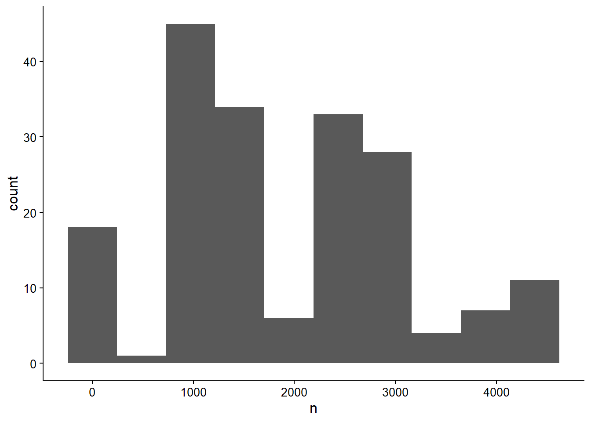
I’m going to join the ID back on to fraud, so I have access to it in all dataframes
fraud <- fraud %>%
left_join(unique_dobs) %>% select(-n)Joining with `by = join_by(state, lat, long, dob)`checking
fraud %>% head()# A tibble: 6 × 16
trans_date_trans_time merchant category amt city state lat long
<dttm> <chr> <chr> <dbl> <chr> <chr> <dbl> <dbl>
1 2019-01-01 00:00:44 Heller, Gutmann… grocery… 107. Orie… WA 48.9 -118.
2 2019-01-01 00:00:51 Lind-Buckridge enterta… 220. Mala… ID 42.2 -112.
3 2019-01-01 00:07:27 Kiehn Inc grocery… 96.3 Gren… CA 41.6 -123.
4 2019-01-01 00:09:03 Beier-Hyatt shoppin… 7.77 High… NM 32.9 -106.
5 2019-01-01 00:21:32 Bruen-Yost misc_pos 6.85 Free… WY 43.0 -111.
6 2019-01-01 00:22:06 Kunze Inc grocery… 90.2 Hono… HI 20.1 -155.
# ℹ 8 more variables: city_pop <dbl>, job <chr>, dob <date>, trans_num <chr>,
# merch_lat <dbl>, merch_long <dbl>, is_fraud <dbl>, ID <int>Kind of a weird pattern, but moving on. Many users have thousands of transactions in this time period.
fraud_uniform <- fraud %>% select(lat, long, merch_lat, merch_long) %>%
mutate(lat_delta = lat-merch_lat, long_delta = long- merch_long)check uniformity
ggplot(fraud_uniform, aes(lat_delta)) +
geom_histogram()`stat_bin()` using `bins = 30`. Pick better value with `binwidth`.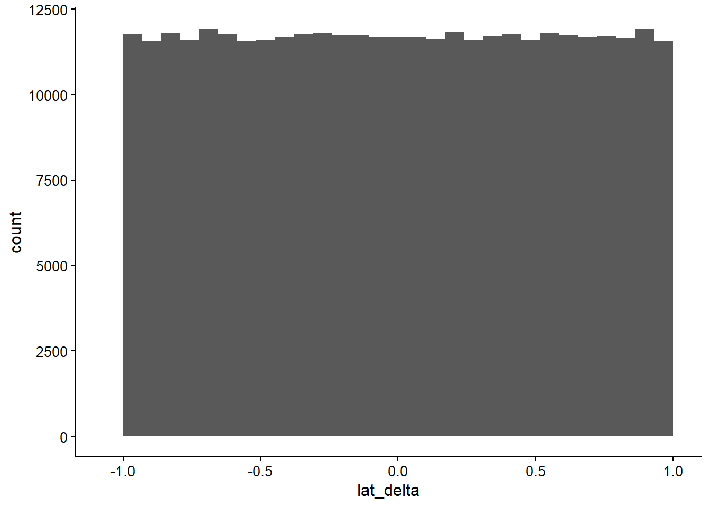
ggplot(fraud_uniform, aes(long_delta)) +
geom_histogram()`stat_bin()` using `bins = 30`. Pick better value with `binwidth`.A million unique merchants
On the other hand, every transaction is associated with a unique merchant location. This isn’t particularly realistic, and makes visualizing the date more difficult.
Not only are there no duplicate merchant locations for specific users…
fraud %>%
group_by(dob, lat, long, merch_lat, merch_long) %>%
count(sort= TRUE)# A tibble: 339,607 × 6
# Groups: dob, lat, long, merch_lat, merch_long [339,607]
dob lat long merch_lat merch_long n
<date> <dbl> <dbl> <dbl> <dbl> <int>
1 1927-09-09 37.8 -119. 36.8 -118. 1
2 1927-09-09 37.8 -119. 36.8 -120. 1
3 1927-09-09 37.8 -119. 36.8 -120. 1
4 1927-09-09 37.8 -119. 36.8 -120. 1
5 1927-09-09 37.8 -119. 36.8 -119. 1
6 1927-09-09 37.8 -119. 36.8 -119. 1
7 1927-09-09 37.8 -119. 36.8 -118. 1
8 1927-09-09 37.8 -119. 36.8 -118. 1
9 1927-09-09 37.8 -119. 36.8 -120. 1
10 1927-09-09 37.8 -119. 36.8 -120. 1
# ℹ 339,597 more rowsBut there are no duplicate merchant locations over the entire dataset.
fraud %>%
group_by(merch_lat, merch_long) %>%
count(sort= TRUE)# A tibble: 339,607 × 3
# Groups: merch_lat, merch_long [339,607]
merch_lat merch_long n
<dbl> <dbl> <int>
1 19.0 -156. 1
2 19.0 -155. 1
3 19.0 -155. 1
4 19.0 -155. 1
5 19.0 -156. 1
6 19.0 -156. 1
7 19.0 -155. 1
8 19.0 -156. 1
9 19.0 -155. 1
10 19.0 -156. 1
# ℹ 339,597 more rowsThat’s suspicious. But it seems to be reflected in the full dataset.
Mapping
Find a shape file of the US. I took one from the census bureau.
https://stackoverflow.com/questions/61282572/cant-read-shp-file-in-r
census_states <- st_read(dsn = "cb_2018_us_state_500k.shp")Reading layer `cb_2018_us_state_500k' from data source
`C:\Users\drsin\OneDrive\Documents\R Projects\lsinks.github.io\posts\pending-cc-fraud-geography\cb_2018_us_state_500k.shp'
using driver `ESRI Shapefile'
Simple feature collection with 56 features and 9 fields
Geometry type: MULTIPOLYGON
Dimension: XY
Bounding box: xmin: -179.1489 ymin: -14.5487 xmax: 179.7785 ymax: 71.36516
Geodetic CRS: NAD83See how this map looks.
ggplot() +
geom_sf(data = census_states)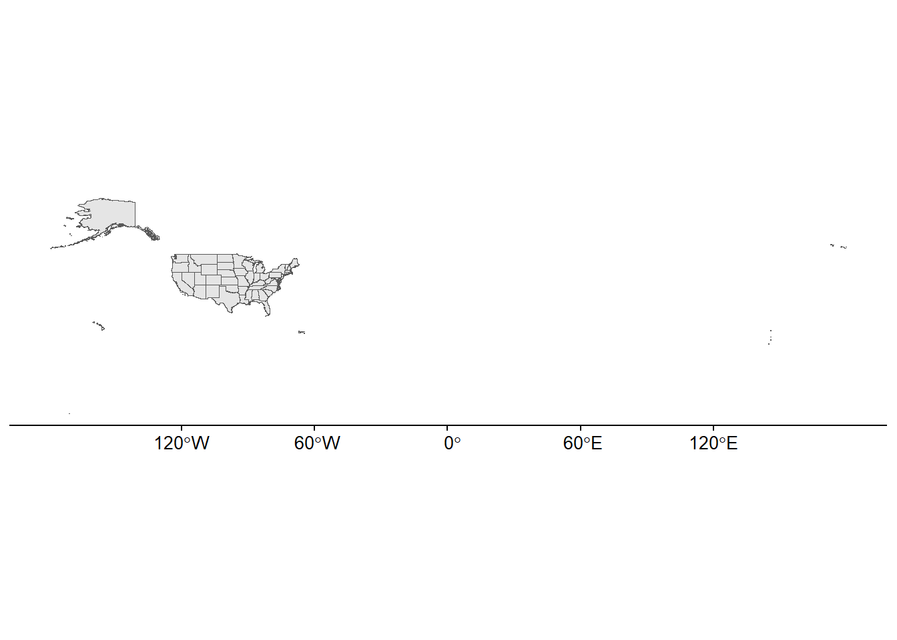
It does contain us territories.
Also, all of Alaska (the island chain to the far right of the graph)
census_states %>%
filter(NAME == "Alaska") %>%
ggplot() +
geom_sf()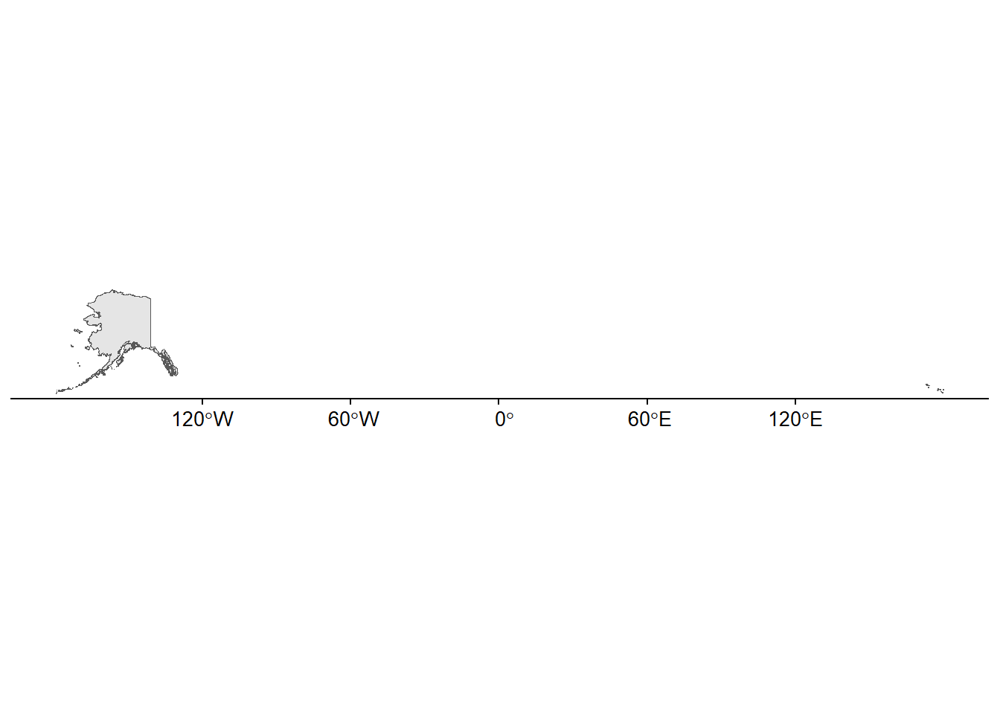
Let’s see the extent of our fraud data.
min(fraud$long)[1] -165.6723min(fraud$merch_long)[1] -166.6716and the lat
max(fraud$long)[1] -89.6287max(fraud$merch_long)[1] -88.6292census_states %>%
filter(STATEFP < 57) %>%
ggplot() +
geom_sf(aes(fill= NAME)) +
guides(fill = "none") +
coord_sf(xlim = c(-166.6716, -88.6292))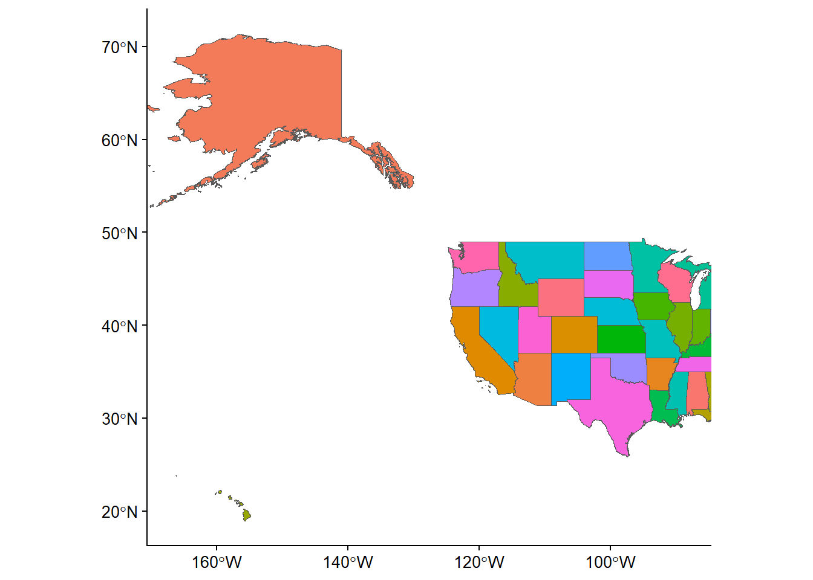
now make a spatial object for the transactions
merchant_points <- st_as_sf(fraud, coords = c("merch_long", "merch_lat"), crs = 4269)home points
home_points<- st_as_sf(unique_dobs, coords = c("long", "lat"), crs = 4269)now map this c(-166.6716, -88.6292)
filter our census states abd crop to our boundaries
census_states <- census_states %>%
filter(STATEFP < 57) %>%
st_crop( xmin = -166.6716, xmax = -88.6292, ymin = -14.5487, ymax= 71.36516)Warning: attribute variables are assumed to be spatially constant throughout
all geometriesggplot() +
geom_sf(data = census_states) +
guides(fill = "none") +
geom_sf(data = merchant_points, alpha = 0.01, size = 1)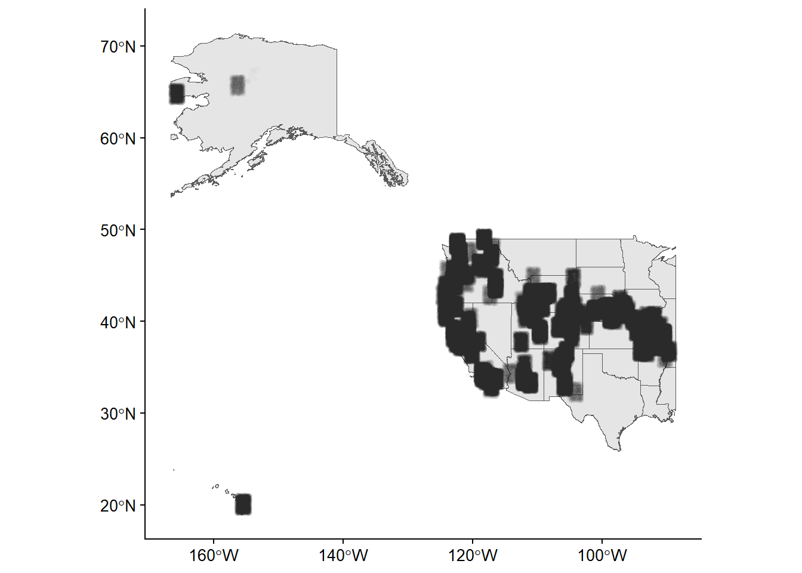
color palette
pal2 <- distinctColorPalette(k = 187, altCol = FALSE, runTsne = FALSE)looking at colors
#show_col(pal2 , labels = FALSE)plotting states
ggplot() +
geom_sf(data = census_states) +
geom_sf(data = merchant_points, aes(fill = ID, color = ID), alpha = 0.01, shape = 21, size = 1) +
geom_sf(data = home_points, shape = 8, size = 1, aes(color = ID)) +
scale_fill_gradientn(colors = pal2) +
scale_color_gradientn(colors = pal2) +
theme_void() +
guides(fill = "none", color = "none") 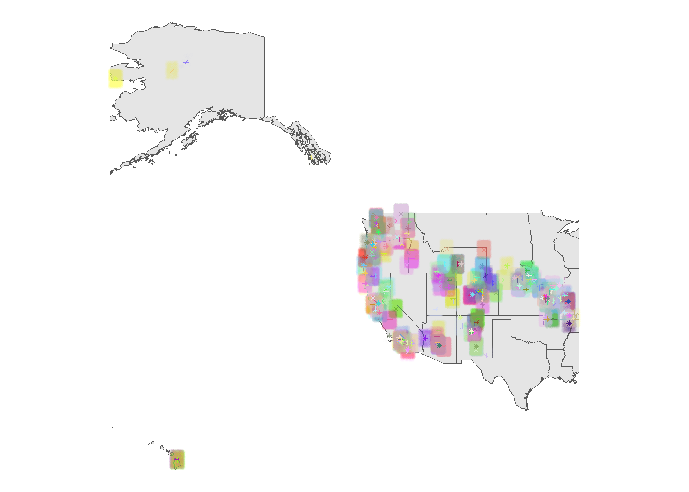
let’s look at one state. Arizona has 7 users, so that seems reasonable.
census_AZ <- census_states %>%
filter(STUSPS == "AZ")
merchant_AZ <- merchant_points %>%
filter(state == "AZ")
home_AZ <- home_points %>%
filter(state == "AZ")create a new palette
pal_AZ <- distinctColorPalette(k = 7, altCol = FALSE, runTsne = FALSE)
#show_col(pal_AZ)AZ_graph <- ggplot() +
geom_sf(data = census_AZ) +
geom_sf(data = merchant_AZ, aes(fill = ID, color = ID), alpha = 0.1, shape = 21, size = 1) +
geom_sf(data = home_AZ, shape = 21, size = 3, aes(fill = ID), color = "black") +
scale_fill_gradientn(colors = pal_AZ) +
scale_color_gradientn(colors = pal_AZ) +
theme_void() +
guides(fill = "none", color = "none") display
AZ_graph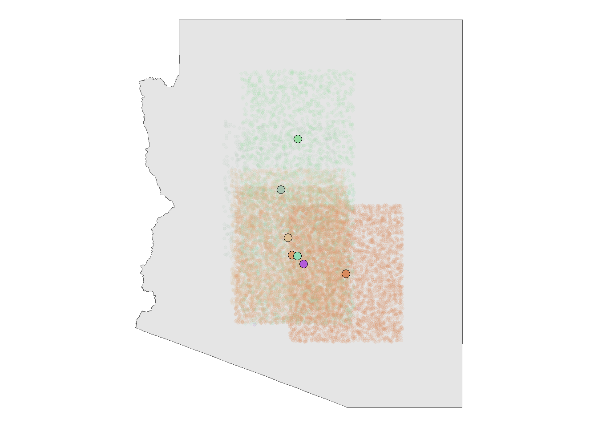
table
home_AZ %>% select(dob, n)Simple feature collection with 7 features and 2 fields
Geometry type: POINT
Dimension: XY
Bounding box: xmin: -112.2523 ymin: 33.2887 xmax: -111.0985 ymax: 35.2563
Geodetic CRS: NAD83
# A tibble: 7 × 3
# Groups: dob [7]
dob n geometry
<date> <int> <POINT [°]>
1 1987-10-28 4383 (-111.0985 33.2887)
2 1981-10-24 4366 (-112.0559 33.5623)
3 1999-11-30 2931 (-112.1202 33.8155)
4 1935-01-29 1469 (-111.9565 33.5494)
5 1957-03-28 1466 (-111.95 35.2563)
6 1955-01-20 738 (-112.2523 34.5189)
7 1940-11-08 9 (-111.8469 33.4317)one_user <- fraud %>%
filter(dob == "1987-10-28")uniform lat
ggplot(one_user, aes(merch_lat)) +
geom_histogram()`stat_bin()` using `bins = 30`. Pick better value with `binwidth`.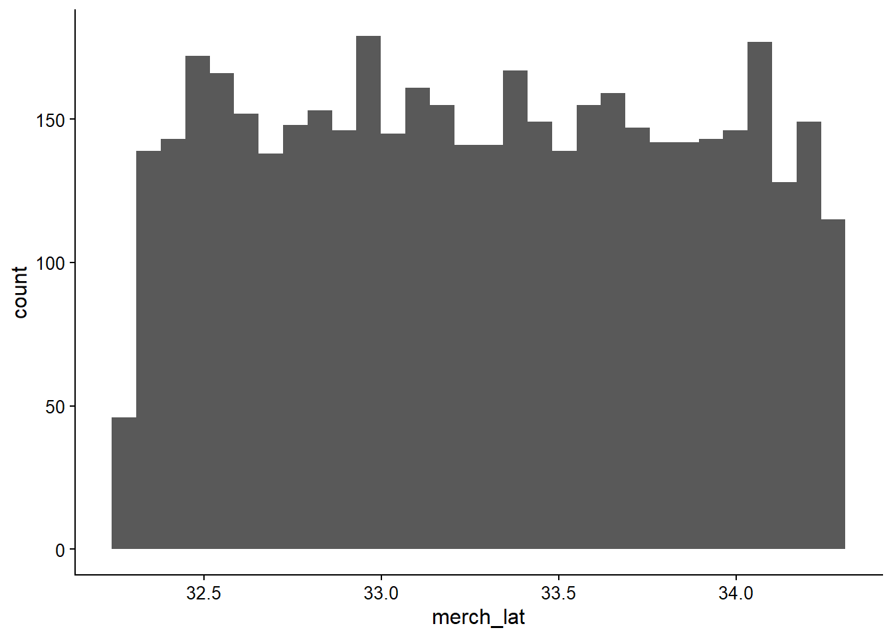
now long
ggplot(one_user, aes(merch_long)) +
geom_histogram()`stat_bin()` using `bins = 30`. Pick better value with `binwidth`.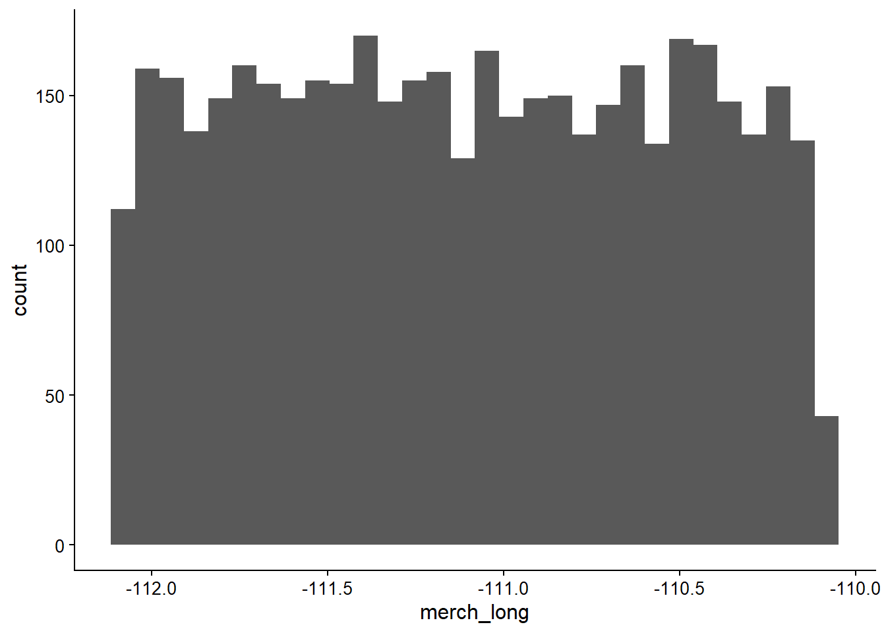
make a 70 mile square
try non-sf objects
dob_AZ <- unique_dobs %>% filter(state == "AZ")get a point
glimpse(dob_AZ)Rows: 7
Columns: 6
Groups: dob, lat, long [7]
$ ID <int> 2, 10, 23, 98, 105, 141, 183
$ dob <date> 1987-10-28, 1981-10-24, 1999-11-30, 1935-01-29, 1957-03-28, 1955…
$ lat <dbl> 33.2887, 33.5623, 33.8155, 33.5494, 35.2563, 34.5189, 33.4317
$ long <dbl> -111.0985, -112.0559, -112.1202, -111.9565, -111.9500, -112.252…
$ n <int> 4383, 4366, 2931, 1469, 1466, 738, 9
$ state <chr> "AZ", "AZ", "AZ", "AZ", "AZ", "AZ", "AZ"r = 1make a bounding box in decimal degrees
x1 = as.numeric(dob_AZ[1,4])
y1 = as.numeric(dob_AZ[1,3])making a point
point_az1 <- sf::st_point(c(x1,y1))sq_buffer <- st_buffer(point_az1,
dist = 120701,
endCapStyle = "SQUARE"
) %>% plot()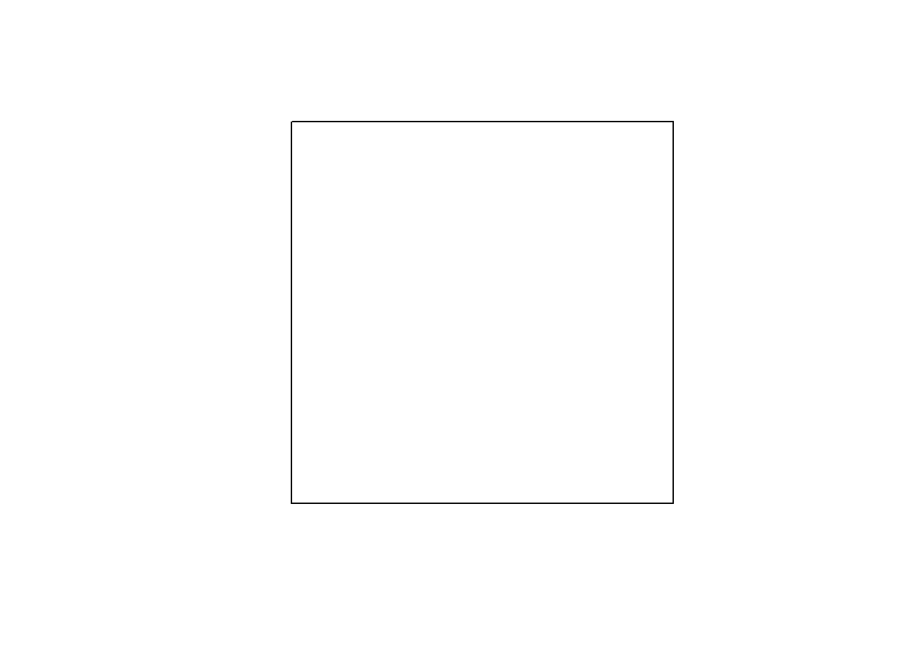
graph
ggplot() +
geom_sf(data = census_AZ) +
geom_sf(data = sq_buffer, color = "black", alpha = 1, size = 10)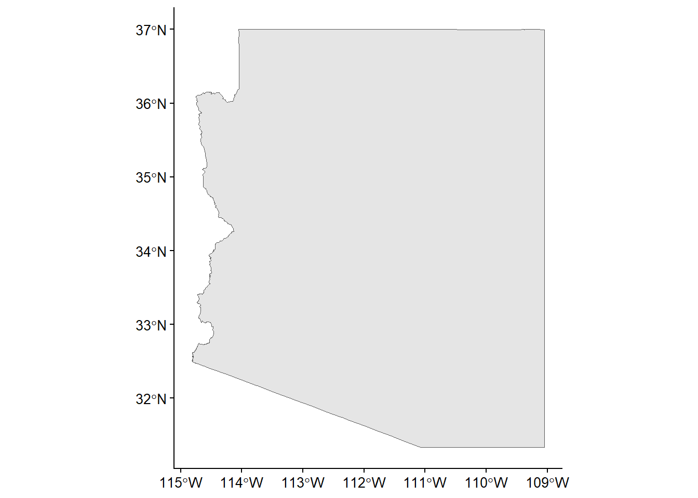
- geom_sf(data = merchant_AZ, aes(fill = ID, color = ID), alpha = 0.1, shape = 21, size = 1) + geom_sf(data = home_AZ, shape = 21, size = 3, aes(fill = ID), color = “black”) + scale_fill_gradientn(colors = pal_AZ) + scale_color_gradientn(colors = pal_AZ) + theme_void() + guides(fill = “none”, color = “none”)
drawing 75 mile circles
circle_buffer <- home_points %>%
st_buffer(120701)ggplot() +
geom_sf(data = census_states) +
geom_sf(data = circle_buffer, aes(color = dob))+
geom_sf(data = merchant_points, aes(fill = dob, color = dob), alpha = 0.01, shape = 21, size = 1) +
geom_sf(data = home_points, shape = 8, size = 1, aes(color = dob)) +
scale_fill_gradientn(colors = pal2)+
scale_color_gradientn(colors = pal2)+
coord_sf(xlim = c(-166.6716, -88.6292)) +
theme_void() +
guides(fill = "none") +
guides(color = "none")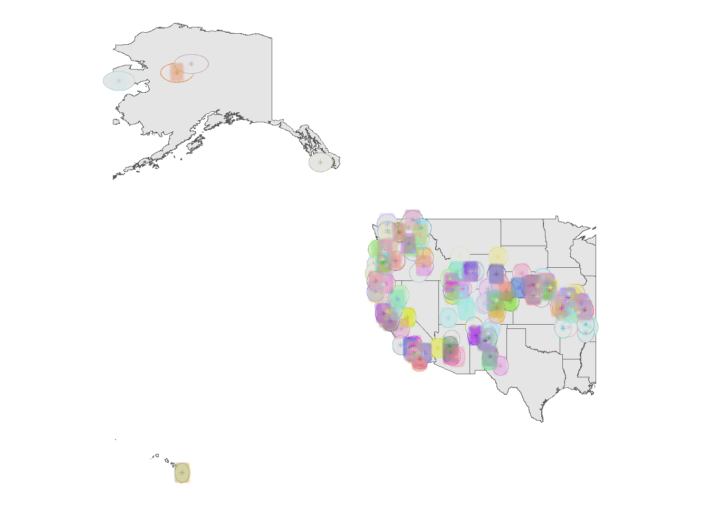
# Code Block 14: Distance Between Home and Transaction
# I believe this assuming a spherical Earth
# convert to radians
fraud <- fraud %>%
mutate(
lat1_radians = lat / 57.29577951,
lat2_radians = merch_lat / 57.29577951,
long1_radians = long / 57.29577951,
long2_radians = merch_long / 57.29577951
)
# calculating distance
fraud <-
fraud %>% mutate(distance_miles = 3963.0 * acos((sin(lat1_radians) * sin(lat2_radians)) + cos(lat1_radians) * cos(lat2_radians) * cos(long2_radians - long1_radians)
))# calculating the correlation
cor(fraud$distance_miles, fraud$is_fraud)[1] -1.15003e-05I’m going to visualize it anyway.
# Code Block 15: Distance from Home and Fraud
ggplot(fraud, aes(distance_miles, is_fraud , fill = factor(is_fraud))) +
geom_point(
alpha = 1,
shape = 21,
colour = "black",
size = 5,
position = "jitter"
) +
scale_fill_viridis(
discrete = TRUE,
labels = c('Not Fraud', 'Fraud'),
name = ""
) +
ggtitle("Figure 5: How far from home does fraud occur?") +
xlab("Distance from Home (miles)") +
ylab("Is Fraud?") 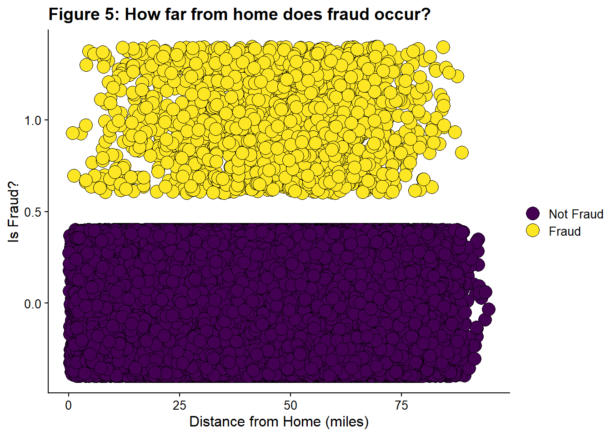
And as a distribution
ggplot(fraud) +
geom_histogram(aes(distance_miles), color = "red", bins = 50) 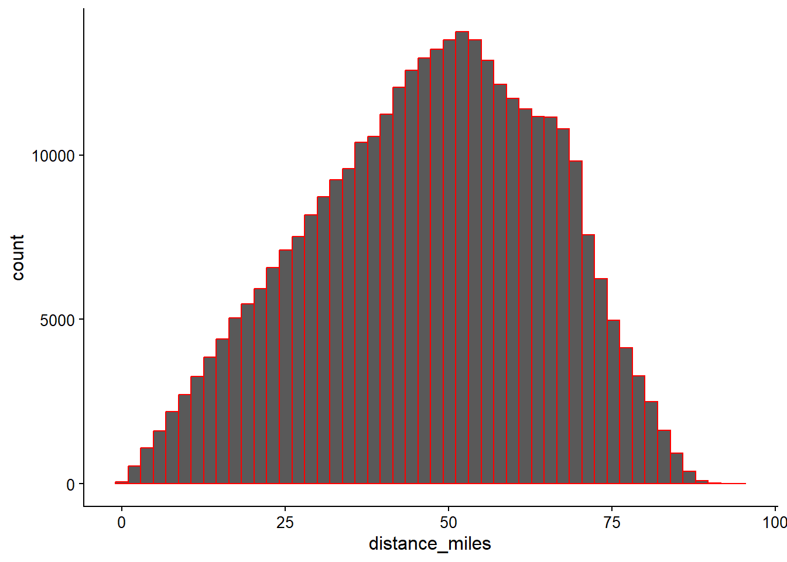
fraud vs not fraud
fraud %>% filter(is_fraud == 1) %>%
ggplot() +
geom_histogram(aes(distance_miles), color = "red", bins = 50) 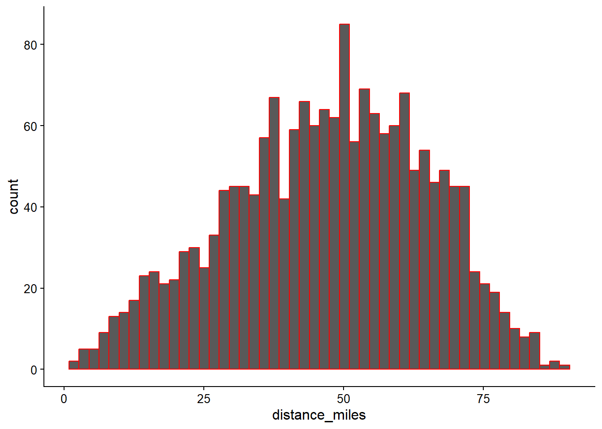
Is not_fraud
fraud %>% filter(is_fraud == 0) %>%
ggplot() +
geom_histogram(aes(distance_miles), color = "red", bins = 50) for the density map
fraud_only <- fraud %>% filter(is_fraud == TRUE) %>% select(distance_miles)
legit_only <- fraud %>% filter(is_fraud == FALSE) %>% select(distance_miles)make into a single df
ggplot() +
geom_density(data = fraud_only, aes(distance_miles) , alpha = 0.5, fill = "blue") +
geom_density(data = legit_only , aes(distance_miles), alpha = 0.5 , fill = "yellow") +
geom_vline(xintercept = 70) +
theme_classic() +
labs(title = "Evolution of Word Scores as Guessing Progresses",
caption = "for 5 letter words") +
xlab("Distance(miles)") +
ylab("Density") 
now use the hack to calculate distance
fraud <- fraud %>%
mutate(distance_hacky = (sqrt((lat-merch_lat)^2 + (long-merch_long)^2)*70))graph
ggplot(fraud) +
geom_histogram(aes(distance_hacky), color = "red", bins = 50) +
geom_vline(xintercept = 70) 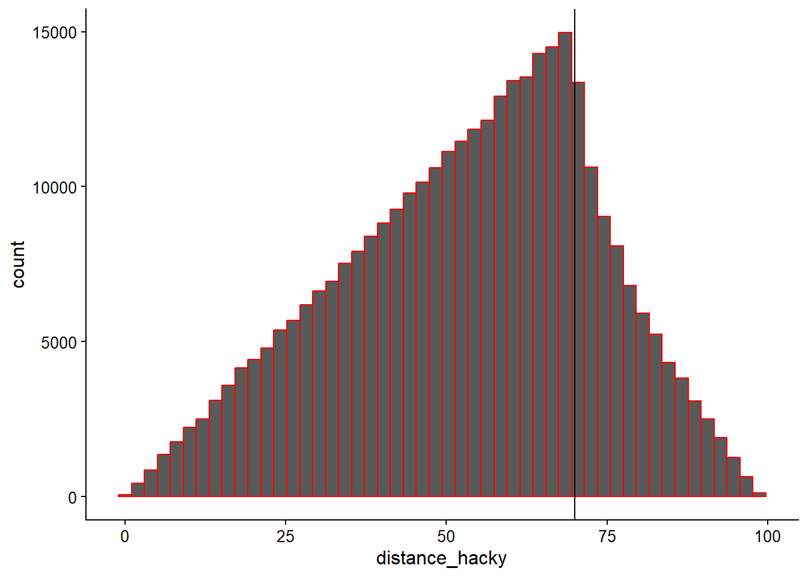
look at one guy
fraud %>% filter(dob == "1987-04-23") %>%
ggplot() +
geom_histogram(aes(distance_hacky), color = "red", bins = 50) +
geom_vline(xintercept = 70) 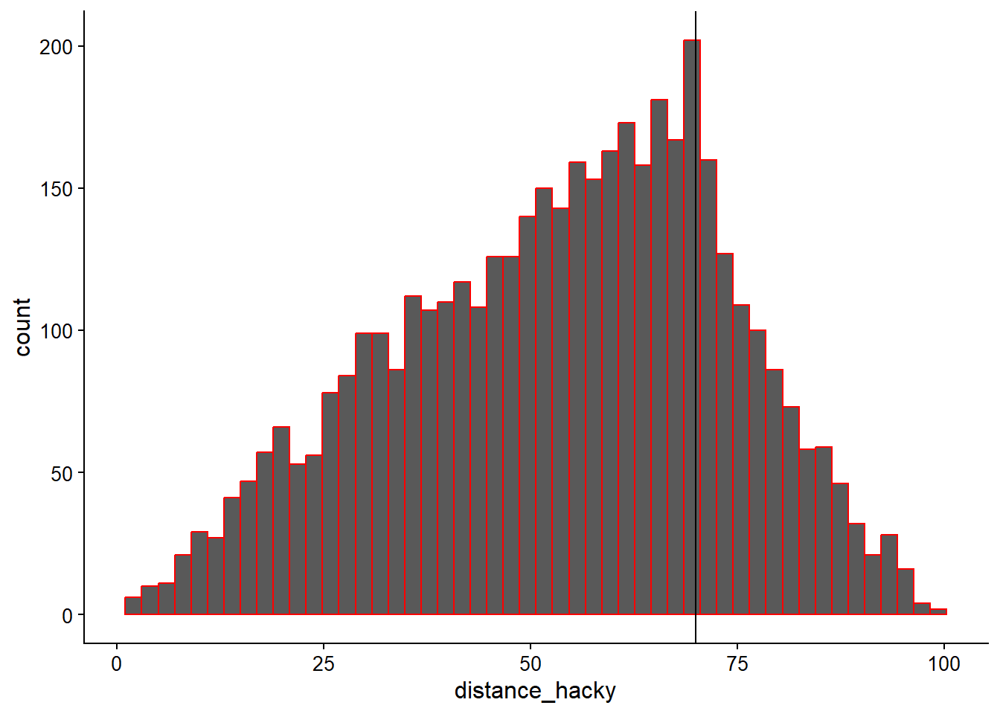
does this make sense
radius = 1Citation
BibTeX citation:
@online{sinks2023,
author = {Sinks, Louise E.},
title = {Credit {Card} {Fraud:} {A} {Tidymodels} {Tutorial}},
date = {2023-04-11},
url = {https://lsinks.github.io/posts/2023-04-11-credit-card-fraud/fraud_tutorial.html},
langid = {en}
}
For attribution, please cite this work as:
Sinks, Louise E. 2023. “Credit Card Fraud: A Tidymodels
Tutorial.” April 11, 2023. https://lsinks.github.io/posts/2023-04-11-credit-card-fraud/fraud_tutorial.html.